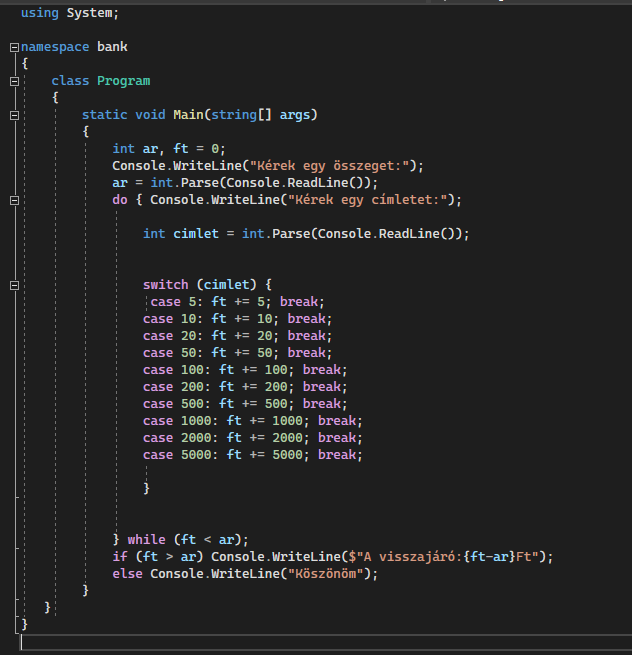

Bank


A megadott kód egy bank programot valósít meg C# nyelven. A program kér egy összeget a felhasználótól, majd a felhasználó beír egy címletet amíg el nem éri az összeget. A program ellenőrzi, hogy a címlet 5, 10, 20, 50, 100, 200, 500, 1000, 2000, vagy 5000-e, és hozzáadja azt az összeghez. Ha az összeg meghaladja az eredeti összeget, a program kiírja a visszajáró összegét, egyébként köszönöm-et ír ki.